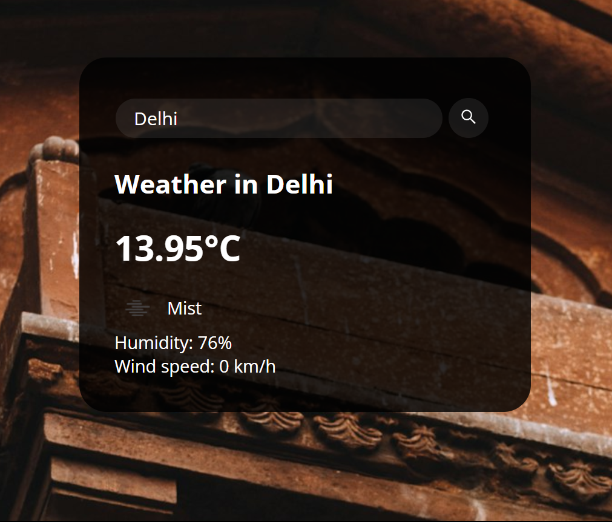

My Projects
Graph Algorithm Implementation & Visualization
This project involves implementing and visualizing various graph algorithms using C++ and the graphics.h library, enabling users to interactively observe the step-by-step execution of algorithms on graphical representations of graphs.
Source Code
Parallax Website, IITDU (Homepage)
This entails creating a demo parallax scrolling website homepage for IITDU using raw HTML and CSS, showcasing dynamic visual effects as users navigate through the page.
Source Code

Weather App API
This Weather App, connected with API allows to access weather data and forecasts, providing temperature information etc.
Source Code